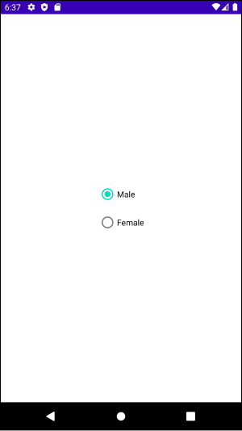

[Android] 뷰(View), 뷰 그룹(View Group), 레이아웃(Layout)
사용자 인터페이스
사용자는 사용자 인터페이스(User Interface)를 통해 애플리캐이션과 상호작용합니다. 따라서 사용자 인터페이스의 디자인과 생성은 애플리캐이션 개발의 핵심 요소입니다.
안드로이드에서 사용자 인터페이스는 뷰(View), 뷰 그룹(View Group), 레이아웃(Layout)으로 구성됩니다.
뷰 (View)
안드로이드에서 사용자 인터페이스의 모든 요소는 android.view.View클래스의 서브 클래스입니다. Button, TextView, ImageView CheckBox, EditText 등은 모두 View클래스를 상속합니다. 이러한 클래스들은 위젯(Widget)이라고도 합니다.
뷰 그룹 (View Group)
뷰는 여러 개의 다른 뷰로 구성될 수 있습니다. 이처럼 다른 뷰를 포함하는 뷰를 뷰 그룹(View Group)이라고 합니다. 뷰 그룹은 android.view.ViewGroup을 상속합니다. RadioGroup이 대표적인 뷰 그룹입니다.
RadioGroup은 여러 개의 RadioButton중에서 하나만 선택할 수 있는 뷰 그룹입니다.
RadioGroup은 다음과 같이 사용합니다.
1 |
|
뷰 그룹 역시 사용자 인터페이스의 요소이므로 View클래스를 상속합니다.
RadioGroup처럼 다른 뷰들을 포함하는 뷰는 부모 뷰 또는 컨테이너 뷰라고 합니다. 부모 뷰에 포함된 뷰는 자식 뷰라고 합니다.
레이아웃 (Layout)
안드로이드는 뷰와 뷰 그룹 뿐만 아니라 레이아웃(Layout)이라는 뷰들도 제공합니다. 레이아웃은 내부에 여러 자식 뷰를 포함할 수 있으며, 자식 뷰를 효율적으로 배치하기 위해 설계되었습니다. 레이아웃 역시 View와 ViewGroup클래스를 상속합니다.
인터페이스 디자인에 자주 사용하는 레이아웃은 다음과 같습니다.
- LinearLayout
- ConstraintLayout
- TableLayout
- FrameLayout
- RelativeLayout
- CoordinatorLayout